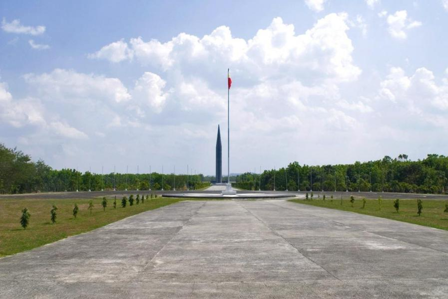

The Capas National Shrine in Tarlac is the Philippines' most solemn memorial to the victims of the 1942 Bataan Death March — a sacred ground honoring the Filipino and American prisoners of war who suffered and died during one of World War II's most tragic episodes.

Located in Capas, Tarlac, the Capas National Shrine marks the site of Camp O'Donnell — the former prisoner of war camp where Filipino and American soldiers were brought after the Bataan Death March of April 1942. The Death March was a forced transfer of approximately 75,000 Filipino and American prisoners of war following the Fall of Bataan, during which thousands died from exhaustion, disease, and brutality.
Camp O'Donnell served as the final destination of the Death March. Conditions in the camp were horrific — overcrowding, disease, starvation, and lack of medical care resulted in the deaths of thousands of prisoners in the weeks and months following their arrival. Estimates suggest that between 20,000 and 30,000 Filipino soldiers and 1,500 American soldiers died at Camp O'Donnell.
Today, the Capas National Shrine is a beautifully maintained memorial complex featuring a tall obelisk monument, a memorial wall inscribed with the names of those who perished, a museum with exhibits about the Death March and Camp O'Donnell, and landscaped grounds that provide a peaceful and contemplative setting for reflection. The shrine is visited by veterans, their families, historians, and Filipinos who come to honor the memory of those who sacrificed their lives.
Capas National Shrine is located in Capas, Tarlac — about 100 km north of Manila. It's easily accessible via the NLEX and SCTEX expressways.
Victory Liner and other bus lines operate services from Cubao or Pasay to Capas, Tarlac. Travel time is about 2₱2.5 hours via NLEX and SCTEX. Alternatively, take a bus to Tarlac City and then a jeepney to Capas.
Travel time: ~2₱2.5 hours | ~₱150–₱200 one-wayFrom Capas town center, hire a tricycle to the Capas National Shrine. The shrine is located a few kilometers from the town center and is well-signposted. The ride takes about 10₱15 minutes.
Tricycle: ~₱30–₱50 | — ~10₱15 minutesDriving from Manila via NLEXSCTEX takes about 1.5₱2 hours. Exit at the Capas interchange and follow signs to the shrine. Parking is available at the shrine grounds.
Drive: ~1.5₱2 hours | Parking available at the shrineEntry to the shrine is free. The complex includes the obelisk monument, memorial wall, museum, and landscaped grounds. Allow 1.5₱2 hours for a thorough visit including the museum exhibits.
Free entry | Open daily 8AM₱5PM | Museum on-siteClick any pin to explore Capas National Shrine and nearby attractions in Tarlac province.
A complete guide to the shrine and a suggested Tarlac day tour combining history and nature.
Begin at the museum — the exhibits about the Bataan Death March and Camp O'Donnell provide essential context for understanding the significance of the shrine. Allow 30₱45 minutes for a thorough visit.
Walk along the memorial wall inscribed with the names of those who perished. Take time to read the names and reflect on the scale of the sacrifice made here. The wall is one of the most moving features of the shrine.
Stand at the base of the obelisk and take in the full scale of the memorial. The monument rises against the Tarlac sky — a powerful and enduring symbol of remembrance for all who suffered here.
Walk the landscaped grounds and take time for quiet reflection. The combination of the memorial structures, the peaceful setting, and the weight of history makes Capas one of the most powerful memorial sites in Southeast Asia.
Start your Tarlac day at the shrine — museum, memorial wall, obelisk, and grounds. Allow 1.5₱2 hours for a thorough and respectful visit.
Head to the Monasterio de Tarlac — a hilltop monastery with a relic of the True Cross and panoramic views of the Tarlac countryside. A peaceful and spiritually significant destination.
End your day at Sumino Farm — a scenic agri-tourism destination with farm activities, fresh produce, and a relaxing countryside atmosphere. A perfect contrast to the morning's solemn memorial visit.
"My grandfather was a survivor of the Bataan Death March and I brought my children to Capas to show them where he and thousands of others suffered. The shrine is beautifully maintained and the museum is excellent. Standing at the memorial wall and seeing the names of those who didn't survive — it was deeply moving. Every Filipino should visit this place."
"As an American veteran's descendant, visiting Capas National Shrine was a deeply personal pilgrimage. The shrine honors both Filipino and American soldiers with equal dignity and respect. The museum is thorough and moving. The grounds are peaceful and beautifully maintained. A place of profound historical importance that deserves far more international recognition."